People
Prof Vivek Benegal
Professor of Psychiatry (Centre for Addiction Medicine) National Institute of Mental Health and Neurosciences (NIMHANS)
Prof Vivek Benegal works in addiction medicine and the genetics of psychiatric disorders. He is interested in developmental behaviour, especially drug abuse and high risk behaviour in street and working children. He is also interested in child development issues and the use of developmentally appropriate aids for children's education and recreation. He conducts drug abuse awareness programmes and life skills training for children in schools and colleges. He has developed a drug awareness module in comic book form. He is involved in the epidemiological assessment of and intervention in drug use and high risk sexual behaviour among street and working children. He has a diploma in communications in film and theatre, and has experience in theatre and documentary cinema. He has made three films, and educational slide shows, and he is interested in theatre and cinema for children.
Prof Gunter Schumann
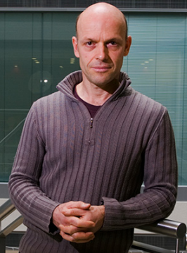
The aim of Professor Schumann’s research is to improve diagnostic and treatment of mental disorder
His general research interests are in etiological and diagnostic stratification of psychiatric disorders to identify neurobehavioural phenotypes, which allow the development of predictive and prognostic biomarkers. His group thus works on the identification of neurobehavioural mechanisms of psychiatric disorders, including addictions. He pursues an interdisciplinary approach, using neuroimaging, functional genetic and epigenetic methods as well as molecular biological and bioinformatic techniques.through stratified medicine. As Director of the Centre for Population Neuroscience and Stratified Medicine (PONS) at the IoPPN, King’s College London, he has developed a broad scientific network of international collaborators, who coordinate large scale neuroimaging studies in Europe, China, India and the U.S., to combine state of the art clinical neuroscience and epidemiological techniques with expertise in computer science and biostatistics.
He coordinates the longitudinal imaging genetics cohort IMAGEN ‘Reinforcement-related behaviour in normal brain function and psychopathology’, and co-coordinates the cVEDA – project, an international Consortium on Vulnerability to Externalizing Disorders and Addictions. He is in the steering group of the imaging meta-analysis consortium ENIGMA and leads the AlcoGen consortium on genetics of alcohol drinking.
Dr Eesha Sharma
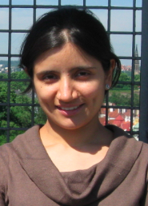
Associate Professor of Psychiatry, National Institute of Mental Health and Neurosciences (NIMHANS), Bengaluru, India.
Dr Eesha Sharma did her MD in Psychiatry at NIMHANS, Bangalore, being awarded the Best Outgoing Student for 2012.
Thereafter she worked as a Senior Resident, and did a Post Doctoral Fellowship in Obsessive-Compulsive and Related Disorders at NIMHANS. She was previously a faculty member, as Lecturer/Assistant Professor at Department of Psychiatry, King George’s Medical University, Lucknow.
Eesha has published her research work in prestigious journals like The Lancet, Psychiatric Clinics of North America, and The Journal of Clinical Psychiatry. She has published 80 articles in peer-reviewed journals, written 6 book chapters, presented her work in national and international conferences, and has delivered guest lectures. At NIMHANS, Eesha supervises PhD, MD Psychiatry and MPhil Clinical Psychology students.
Dr Bharath Holla
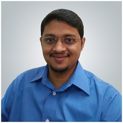
Bharath Holla is Associate Professor of Psychiatry at the National Institute of Mental Health and Neurosciences (NIMHANS), Bengaluru, India.He holds an MD in Psychiatry and a PhD in imaging-genomics of addiction, with a post-doctoral fellowship in addiction psychiatry. His research integrates brain imaging and genomics to study the biological basis of mental health and illness. His clinical and research interests encompass addiction and the broader spectrum of psychiatric disorders. He is particularly interested in the evidence-based integration of novel treatment paradigms in psychiatry. He is also involved in post-graduate education, teaching reproducible neuroscience and promoting open science initiatives.
Prof Gareth J Barker
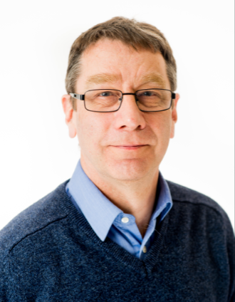
Professor Barker has worked in Magnetic Resonance Imaging research as applied to neurological
and psychological disorders for over 25 years. In the neurological field, his particular interests are in multiple sclerosis, epilepsy and neurodegenerative disorder; in psychiatry, he has interests in schizophrenia, bipolar disorder and depression. In parallel, his work also involves healthy controls, and has applications in the more fundamental questions of brain structure and function.
Much of his work has been on technique development, both for image acquisition and processing, and on the optimisation of protocols that make these techniques applicable to patient populations. He currently holds an ethical approval for the development and optimisation of such scanning techniques in normal controls, along with a separate approval to allow the further optimisation sometimes required to make the techniques acceptable to clinical patients. He has a particular interest in quantitative MRI techniques; these include relaxation time measurements (which can probe the molecular environment of water within tissue (and in certain circumstances can reveal information such as the myelin water fraction)); magnetization transfer (another marker of myelination), perfusion (quantitatively and non-invasively measuring blood perfusion) and diffusion tensor imaging (providing a probe of the structure and integrity of neuronal tissue).
Dr Sylvane Desrivières
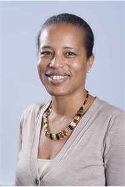
Over the course of her career she has applied expertise in genetics and molecular and cell biology to understand how gene activity controls biological functions in organisms and systems of increasing complexity, from individual cells and unicellular organisms to organs, such as the mammary gland, and finally to the human brain.
Since little is known about the genetic bases of brain structure and function, she has combined the tremendous advantages of magnetic resonance imaging (MRI) with genetics and molecular biological approaches to investigate brain-behaviour relationships and identify genes influencing brain development and function, focusing on typically developing individuals. She applies MRI to discover the genetic roots of neuroanatomic, neurophysiological and cognitive traits that may be disrupted in individuals suffering from major mental illnesses. Another aspect of her work is aimed at overall better understanding of the etiology of addiction to alcohol and other drugs and her research helps defining risk factors for alcohol-use disorders later in life, which is fundamental for the prevention of alcohol abuse in adolescents and treatment of alcoholism, both major unmet challenges affecting our health care system and society alike.
Ms Nilakshi Vaidya
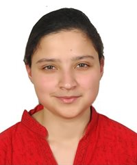
Nilakshi started working with cVEDA as Psychologist at the Post Graduate Institute of Medical Education and Research (PGIMER), Chandigarh from May, 2016.In 2018, she joined the post of Project Coordinator -India at National Institute of Mental Health and Neurosciences (NIMHANS), Bengaluru.
She has previously worked as Psychotherapist with Indian Air Force, Abhaya Hospital, Indira Gandhi Medical Hospital, Institute of Personality Assessment and Childline.
Her general research interests are in the etiology of mental health conditions and community based psychotherapy.
Dr Amit Chakrabarti
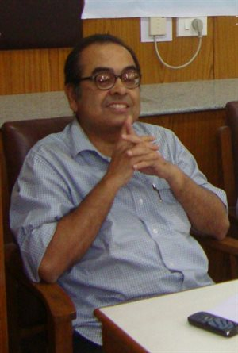
Dr Amit Chakrabarti is Scientist “E” (Deputy Director – Medical) at ICMR-Regional Occupational
Health Centre, Eastern of National Institute of Occupational Health, Indian Council of Medical Research (ICMR), Government of India. Dr Chakrabarti is a physician, psyc
hopharmacologist and substance abuse epidemiologist by training. He received his MBBS in 1987 from Medical College, Calcutta, India and MD in Pharmacology in 1994 from Banaras Hindu University, India. His research interests are in epidemiology and interventions on alcohol and other substance problems in occupational health; and neurobehavioral consequences of exposure to environmental neurotoxins. Dr Chakrabarti has around 80 publications and has participated in a number of national and international meetings and conferences.
His post-doctoral trainings include NIDA funded Hubert H. Humphrey Fellowship in 2002 – 2003 on substance abuse at Bloomberg School of Public Health, Johns Hopkins University, Baltimore, USA; and NIDA supported international INVEST/CTN Fellowship during 2008 – 2009 at Northern New England Node of CTN at McLean Hospital & Harvard Medical School, Boston, USA. During his fellowship tenure Dr Chakrabarti investigated predictors of buprenorphine-naloxone dosing in opioid dependent adolescents and youth. Dr Chakrabarti has been PI of India chapte
r of a ten-country study on patterns of consumption of unrecorded alcohol; and site investigator of a WHO funded project on alcohol misuse in India in collaboration with NIMHANS, Bangalore. His research group is currently investigating community level brief intervention for tobacco, alcohol and cannabis among coal mine workers in West Bengal, India; possible role of a neurotoxin in etiology of an acute neurological illness among rural children in Bihar, India; association between neurodegenerative diseases and pesticide exposure in a rural area of West Bengal, India; associations of chronic low back pain among jute mill workers; and as one of Site-PIs in the cVEDA Project.
Prof Debasish Basu
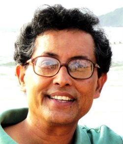
Dr Debasishh Basu is Professor of Psychiatry at the Postgraduate Institute of Medical Education and Research in Chandigarh. He has iver 27 years of teaching experience and has carried out over 30 projects and has published over 300 papers and 20 book chapters with publication citation (H) index of 26.Prof Basu has received numerous awards including the NIDA INVEST International Research Fellowship (NIDA, USA); NHS International Fellowship (NHS, UK); Tilak Venkoba Rao (ICMR); Marfatia, Bhagwat, PPA (IPS); Balint, GC Boral (IASP).
Major areas of interest: Addiction Psychiatry; Dual Diagnosis
Dr R. K. Lenin Singh
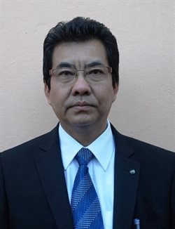
Dr R. K. Lenin Singh is a psychiatrist, a writer, and a songwriter. He is also known for his talks /
Dr Kartik Kalyanramawareness programme on mental health issues in the community. He serves as a Professor and Head in Department of Psychiatry, RIMS (Regional Institute of Medical Sciences), Imphal, Manipur. He is the ‘Honorary Secretary’ of Indian Psychiatric Society, Eastern Zonal Branch, ‘Secretary’ of ARIMSA (Association of RIMS Alumni), and ‘Honorary Secretary’ of Indian Psychiatric Society, Manipur State Branch. Besides working as a clinician and a teacher in a Medical Institute, Dr Singh also works on different research projects and programmes. Currently, he is a Nodal Officer of RRCC (Regional Resource Coordinating Centre) and DTC (Drug Treatment Clinic), RIMS, Imphal and Principal Investigator of the Manipur State for the “National Mental Health Survey”, under the Ministry of Health and Family Welfare (MOHFW), Govt. of India. Dr Singh also takes interest on writing books about mental health and social issues. He is a regular contributor of articles on local print media and regularly presents various talk shows on local TV channels, DDK Imphal and AIR Imphal.
Dr Kartik graduated from the Armed Forces Medical College in 1982. He was commissioned to the Indian Air Force in December 1982. He then did his MD in Aviation Medicine from Institute of Aerospace Medicine, Bengaluru in 1989 and an Advanced Course in Aerospace Medicine from US Air Force School of Aerospace Medicine. He prematurely retired from the IAF in 1999. He joined the Rishi Valley Education Centre and there as part of community outreach he started and set up the Rural Health Centre. The RHC provides Primary Level Health Care to Below Poverty Line Rural families. The centre has been involved in Epidemiology work on Non Communicable Diseases primarily Hypertension in collaboration with Monash University, Melbourne and Christian Medical College, Vellore.
Dr Kalyanaraman Kumaran
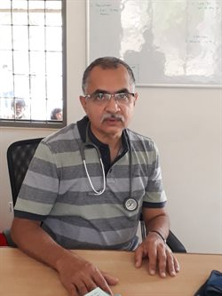
Dr Kalyanaraman Kumaran is affiliated to Epidemiology Research Unit, CSI Holdsworth Memorial Hospital, Mysore, India and is Clinical Scientist/Senior Lecturer at MRC Lifecourse Epidemiology Unit, University of Southampton within Medicine at the University of Southampton. His interests include the application of evidence-based interventions at population level through a lifecourse approach, reduction of health inequalities and improved access to healthcare, and teaching and training initiatives.He is currently involved in a community-based trial of pre-conceptional micronutrient supplementation and mechanistic studies of fetal programming in India. Dr Kumaran is also involved in projects relating to the developmental origins of health and disease across Southampton-India sites mainly based in India (Pune, Mumbai and Mysore). The projects he is involved with include The Pune Intervention Trial, One-carbon metabolism and fetal growth and Intergenerational programming of diabesity in offspring of women with Gestational Diabetes Mellitus (InDiaGDM).
Dr Rebecca Kurian Raj
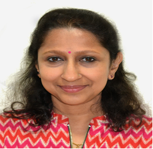
Prof Raj has been actively involved in studying the trends and determinants of childhood overweight and obesity in urban Bangalore, India since 2008. She runs a cohort of about 10,000 children and has accurately measured body composition in school aged children. Additionally, she heads the Clinical Nutrition Unit at St. John’s Medical College Hospital, which specializes in providing nutrition advice and counselling to individuals (children and adults) for overweight/obesity, diabetes and other chronic diseases.
Since 2009 she has been involved in ongoing collaborative efforts between Harvard School of Public Health (HSPH) and St. John’s Research Institute (SJRI) in training and mentoring students. She has also been the course director for a 2 week short term course in International Nutrition Research Methods since 2010, which is a part of the Bangalore Boston Nutrition Collaborative (BBNC). The BBNC is collaboration between scientists at SJRI and colleagues at HSPH and Tufts University in Boston for nutrition research and training. The main purpose of the BBNC is to improve the state of public health in India by training a new generation of Indian scientists and physician researchers in the field of nutrition. This course has been held annually since 2010 and we have trained over 300 students.
Dr Meera Purushottam
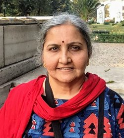
Dr Meera Purushottam is senior geneticist at the Molecular Genetics Laboratory at NIMHANS where the focus has been the genetic basis and correlates of psychiatric and neurological diseases.
The laboratory is the testing ground for many clinicians who base their post graduate and doctoral thesis dissertations on wet lab experiments carried out under her supervision. Her work has focused on trying to understand the influence of gene variants on disease presentation and response to drugs. Cells derived from patients have been used to unravel disease mechanisms better, while whole exome studies have helped to identify rare risk variants in severe mental illness in patients. She is in charge of genetic testing for early onset neuromuscular and late onset movement disorders. She is interested in understanding the biological implications of genetic variants at the level of the patient, the tissue and the cell. The effect of the environment on the DNA methylome is an area of specific interest.